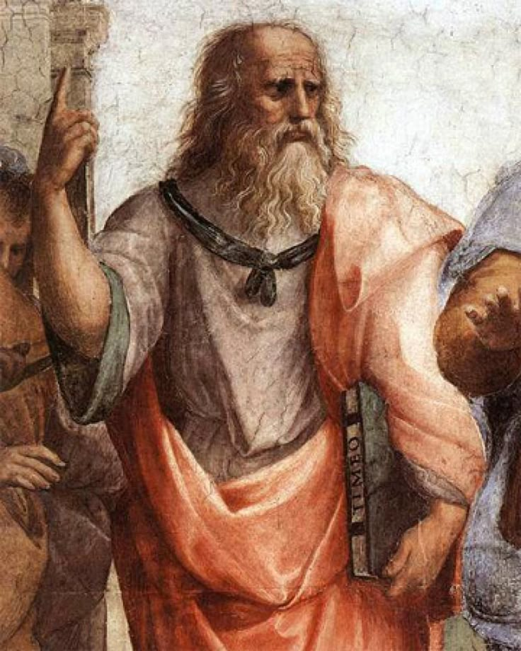
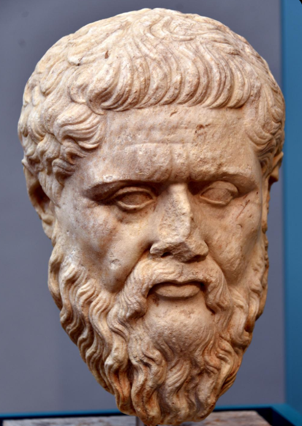
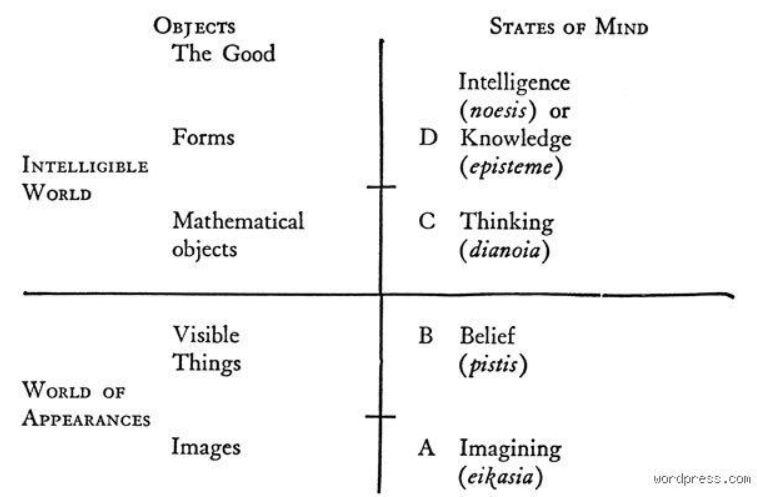
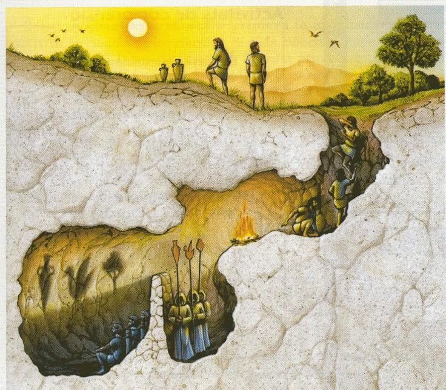
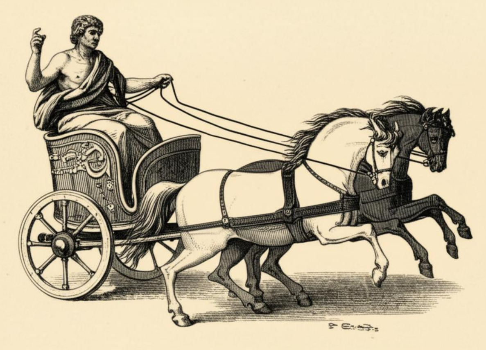
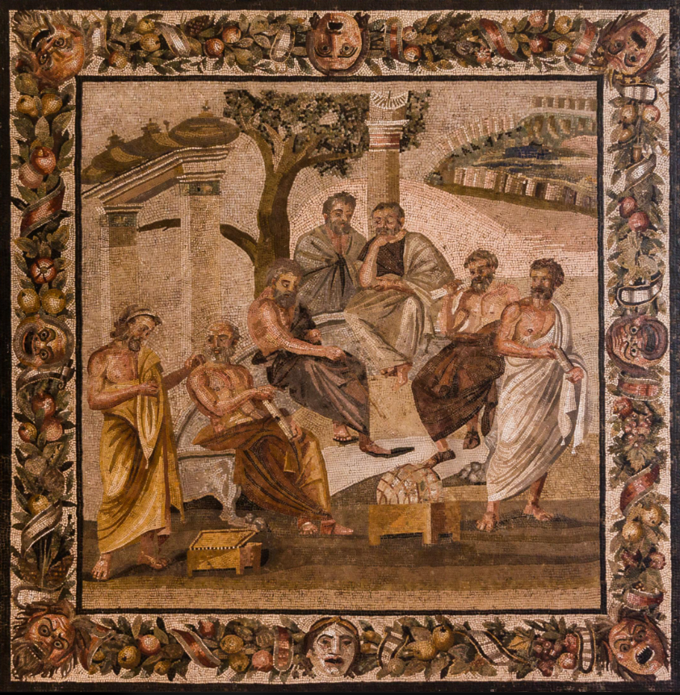

Who Was Plato?

Plato was born in Athens around 428 or 427 BCE into a well-off, politically connected family, and he died there around 348 or 347 BCE.A He was a pupil and devoted admirer of Socrates, founded the Academy near Athens, and taught Aristotle. What makes him unusual is how much of his writing has survived: about thirty dialogues, plus a handful of letters of disputed authenticity, which is far more than we have for any earlier Greek thinker.[2]
Plato did not write textbooks. He wrote conversations, with characters who argue, lose their tempers, change their minds, and sometimes walk away without an answer. The ideas he is known for, such as the Forms, the tripartite soul and rule by philosophers, are never delivered as a lecture. They are tried out, defended and attacked by the speakers, and Plato himself never steps forward to say what he personally believes. That is the main reason reading him is both rewarding and slippery.
Behind the dramatic settings there is a steady set of concerns. What is justice, and does it really pay to be just? How can anyone know anything, rather than just hold opinions? What are we, and does part of us outlast the body? What would it take to run a city well? Plato keeps returning to these questions from different angles, and the sections below follow them through his life, his major works and the ideas he left behind.
A word on how to read this page. Where the evidence is solid, it is stated plainly. Where we depend on later biographers, or where scholars argue about what Plato meant, the text says so. That distinction matters more for Plato than for most philosophers, because a great deal of what is said about him, including the familiar summary of the Forms as a separate world, is interpretation layered on top of the dialogues.
Plato: Quick Facts
| Name | Plato (Plato of Athens) |
|---|---|
| Lived | c. 428/427–348/347 BCE |
| Birthplace | Athens, Greece (an Aegina tradition also exists) |
| Died | Athens |
| Teacher | Socrates |
| Student | Aristotle |
| School | The Academy, Athens (founded c. 387 BCE) |
| Tradition | Classical Greek philosophy; the origin of Platonism |
| Major works | Republic, Apology, Phaedo, Symposium, Meno, Phaedrus, Theaetetus, Timaeus, Laws |
| Key ideas | Theory of Forms, the Form of the Good, recollection, the tripartite soul, philosopher-rulers, the ladder of love |
| Writing style | Philosophical dialogues |
Plato's Life and Historical Context
Also read: Explore Ancient Greece Ancient Greek philosophy is the tradition of inquiry, from the Pre-Socratics to Socrates, Plato and Aristotle, that first asked systematically about nature, knowledge, ethics and politics. Read article →
Plato's biography comes mostly from later writers, above all Diogenes Laertius, who wrote about six centuries after Plato's death, and from the Seventh Letter, whose authenticity is still argued over.[7] The outline is dependable: an aristocratic Athenian youth, a political world that collapsed around him, the trial of Socrates, years of travel, and a long career as a teacher and writer. Many of the colourful anecdotes are not, and they are flagged as tradition below.
Family and Early Life

Plato's father was Ariston and his mother Perictione, and both sides of the family were prominent. His brothers, Glaucon and Adeimantus, appear as lively speakers in the Republic, and Perictione's relatives included Critias and Charmides, who later held power under the oligarchic regime of the Thirty.[6] A young man from that background would normally have expected a career in public life, and Plato says as much about his own early hopes.
According to Diogenes Laertius, his birth name was Aristocles and "Plato", from platus, "broad", was a nickname, perhaps for his shoulders, perhaps for his wide forehead, perhaps for his style.B Nobody can confirm the story, and it is typical of the kind of detail the ancient biographies liked to pass on. What we can say is that he received the usual education for a wealthy Athenian boy, including poetry, music and gymnastics, and that he arrived at philosophy through Socrates rather than through any formal school.
War, Defeat and Political Disillusion
Plato grew up during the Peloponnesian War, the long struggle between Athens and Sparta that ran from 431 to 404 BCE. When Athens finally surrendered, a group of oligarchs known as the Thirty Tyrants took over the city, and two of Plato's relatives were among them. Their rule was brief and violent, and democracy was restored in 403.
In the Seventh Letter Plato describes how he was first encouraged by the oligarchs and then repelled by them, only to see the restored democracy execute Socrates, a man he considered the most just person he had known. If the letter is genuine, it gives us his own account of how he turned from politics to philosophy, convinced that cities would not be put right until political power and philosophical understanding came together.G Whether or not Plato wrote those exact words, the idea sits at the centre of the Republic.
The Death of Socrates
In 399 BCE an Athenian jury convicted Socrates of impiety and of corrupting the young and sentenced him to death by hemlock. Plato, then in his late twenties, was present at the trial, which he presents in the Apology, but he tells us in the Phaedo that he was too ill to be at the prison on the day of the execution. It is a small detail, and an unusually personal one, coming from a writer who otherwise removes himself from his own books.
Almost everything Plato wrote afterwards can be read as a reply to that event. Why would a city kill its best citizen? What is justice if it can convict an innocent man? Can philosophy protect itself in a society that does not value it? The dialogues do not settle these questions, but they keep them alive, and Socrates stays at the centre of nearly all of them.
Years of Travel
After the execution, tradition says, Plato and several other followers of Socrates withdrew to Megara, where they stayed with the philosopher Euclid. Later accounts add trips to Cyrene and Egypt, but the evidence is thin, and these journeys are better treated as possible than proved. What is firmer is a visit to southern Italy and Sicily around 388 or 387 BCE, where he met Pythagorean thinkers, notably Archytas of Tarentum, an encounter that left a clear mark on his interest in mathematics and on his talk of the soul.
Plato and Syracuse
The Sicilian trip also took him to Syracuse, ruled by the tyrant Dionysius I, where he befriended Dion, the tyrant's brother-in-law. Ancient writers tell a dramatic story of a falling-out with the ruler and of Plato being sold into slavery on the island of Aegina and ransomed by a friend. It makes a good tale, but it is tradition rather than documented history.
Plato returned to Syracuse around 367 BCE, after the death of Dionysius I, at Dion's urging, hoping to guide the young Dionysius II toward philosophical rule. The attempt went badly, and a third visit around 361 to 360 fared no better. Dion eventually seized the city by force and was murdered in 354. For a philosopher who had argued that rulers should be educated, the experience was a lesson in how hard it is to apply a theory of politics to a real court.
Final Years and Death
Between and after the Sicilian journeys Plato taught and wrote at the Academy, producing the late dialogues in which his own arguments are examined more critically than ever. He died in Athens around 348 or 347 BCE, apparently at a good age and still working. The Laws, his longest dialogue, was unfinished, and ancient tradition says a student, Philip of Opus, prepared it for circulation. The Academy carried on under his nephew Speusippus, and Plato's thought passed into the hands of everyone who read it afterward.
Timeline of Plato: Key Dates and Events
The Peloponnesian War is fought between Athens and Sparta and ends in Athenian defeat.[1]
Plato is born in Athens into an aristocratic family.[7]
The Thirty Tyrants rule Athens, including Plato's relatives Critias and Charmides. Democracy is restored.[6]
Socrates is tried and executed. Plato begins to write dialogues and leaves Athens for a time.[1]
Plato visits southern Italy and Syracuse, meeting Dion and the Pythagorean Archytas.[7]
Plato founds the Academy in a grove outside the walls of Athens.[1]
The seventeen-year-old Aristotle joins the Academy. Plato makes his second trip to Syracuse.[7]
Plato's third and last visit to Syracuse, which ends in failure.[6]
Plato dies in Athens. Speusippus becomes head of the Academy.[7]
Plotinus develops Neoplatonism, one of the most influential readings of Plato.[11]
Marsilio Ficino's Latin translation of Plato's complete works is printed in Florence.[11]
Henri Estienne's edition of Plato appears, whose page numbers are still used to cite his works.D
Major Works of Plato
Also read: Explore philosophical books Philosophical books are the texts through which philosophical ideas have been argued, preserved and passed on across traditions and centuries. Read article →
Around thirty dialogues are now accepted as Plato's, with a few more of disputed status and thirteen letters that most scholars treat with caution.C They range from a few pages to the vast Laws, and they are very different in tone. Some are short, sharp cross-examinations that end in confusion; others are long, constructive and almost like treatises. Choosing where to start matters, so this section groups the works, then looks at nine that most readers meet first.
How the Dialogues Are Grouped
Scholars usually sort the dialogues into three loose groups, partly by style and partly by content. The early dialogues, such as the Apology, Euthyphro, Crito, Laches, Charmides and the first book of the Republic, show Socrates testing definitions of virtues and ending in aporia, or puzzlement. The middle dialogues, including the Meno, Phaedo, Symposium, Phaedrus and most of the Republic, put forward bolder positions: Forms, recollection, the tripartite soul. The late dialogues, among them the Parmenides, Theaetetus, Sophist, Statesman, Timaeus and Laws, are more technical and often criticise earlier ideas.[5]
This scheme is helpful, but it is not certain. It rests on stylistic studies of Plato's vocabulary and word order, and it can tempt readers into assuming that Plato's thought moves in a neat line. Some scholars prefer to read each dialogue on its own terms, noticing the dramatic setting and the particular conversation instead of fitting it into a stage of development.
Apology
The Apology is Plato's account of Socrates' defence at his trial in Athens, where he faced charges of impiety and corrupting the young. Socrates does not make much effort to flatter the jury. Instead, he explains why he spends his life questioning people who claim to be wise and insists that recognizing one's own ignorance is the beginning of genuine wisdom. His famous commitment to examining his life gives the dialogue its lasting force: philosophy appears not simply as a subject to study, but as a way of living. Socrates also refuses to abandon his principles merely to save himself, making the Apology an important text about conscience, intellectual freedom, and the relationship between the individual and society. It is one of the best places to begin reading Plato, although it should be remembered that it is Plato's literary and philosophical portrait of Socrates, not a verbatim record of the trial.
Republic
The Republic, divided into ten books, begins with a deceptively simple question: what is justice, and is it actually better to be just than unjust? Socrates' attempt to answer it gradually expands into one of Plato's most ambitious investigations of human life. The dialogue considers the ideal political community, the education of its citizens, the structure of the soul, the role of philosophers, and the nature of reality itself. Its famous images of the Sun, the Divided Line, and the Cave are used to explain different levels of knowledge and the difficult movement from ignorance toward understanding. The Republic is therefore not simply a book about politics: it connects political order with psychology, education, ethics, and Plato's theory of Forms. Its argument is demanding, but its central question remains surprisingly familiar—what would a genuinely good life look like, and what kind of society would make such a life possible?
Phaedo
The Phaedo takes place in Socrates' prison cell on the day of his execution. Surrounded by friends, Socrates discusses whether the soul survives death and why a philosopher should not approach death in quite the same way as an ordinary person. The conversation develops several arguments for the immortality of the soul, including arguments based on opposites, recollection, and the soul's relationship to the Forms. Socrates also explains why he believes the body can distract the mind from the search for truth, although the dialogue is more nuanced than a simple rejection of physical life. What makes the work especially powerful is the contrast between the abstract arguments and the immediate reality of Socrates' approaching death. The final scene, in which he calmly drinks the hemlock, turns the philosophical question of how to live into a very personal question of how to face death.
Symposium
The Symposium, a group of Athenian men gather at a drinking party and agree to give speeches in praise of eros, or love. Each speaker approaches the subject differently: Aristophanes offers his memorable story of humans originally being joined together and searching for their missing halves, while Socrates reports a teaching he received from Diotima. Her account presents love as a desire that can begin with attraction to a particular person but gradually reach toward beauty itself. The dialogue therefore turns an ordinary human experience into a philosophical question about desire, beauty, immortality, and the search for what is good. Yet Plato never lets the discussion become purely abstract. The arrival of the drunken Alcibiades near the end brings the conversation back to personality, desire and the complicated figure of Socrates. The result is one of Plato's most playful and literary dialogues, but also one of his deepest treatments of love and beauty.
Meno
The Meno opens with a straightforward question: can virtue be taught? Socrates quickly complicates the question by asking what virtue actually is, exposing the difficulty of trying to teach something that has not first been properly defined. The discussion then leads into a larger problem: if a person does not know what they are looking for, how can they ever discover it? Plato explores this through the theory of recollection, according to which learning can be understood as the recovery of knowledge already present in the soul. The famous geometry demonstration with an enslaved boy is used to illustrate this idea, although the philosophical implications of the scene are still debated. The dialogue also considers whether true belief can guide action even when it is not yet genuine knowledge. Shorter and more accessible than many of Plato's major works, the Meno is a particularly useful introduction to his questions about knowledge, inquiry, education, and virtue.
Phaedrus
The Phaedrus unfolds during a conversation between Socrates and Phaedrus outside Athens, where an apparently simple discussion of love develops into a much wider examination of the soul and the art of speaking. Plato uses the image of a charioteer guiding two horses to describe the divided forces within the soul and the struggle involved in directing desire toward what is genuinely good. The dialogue also asks what makes rhetoric more than mere persuasion: for Socrates, a good speaker must understand the truth about the subject and the character of the people being addressed. Near the end, Plato turns to writing itself. Socrates tells the story of Theuth and Thamus, presenting writing as something that can preserve words while also failing to provide the living exchange of questions and answers that genuine understanding requires. This tension is especially striking because Plato is himself preserving philosophical conversations in written form. The Phaedrus is therefore important not only for its ideas about love and the soul, but also for its reflections on language, rhetoric, memory, and philosophy.
Theaetetus
The Theaetetus is one of Plato's most sustained investigations into the nature of knowledge. Socrates asks the young mathematician Theaetetus to define knowledge, and three major possibilities are examined: knowledge as perception, knowledge as true belief, and knowledge as true belief accompanied by an account or explanation. Each proposal encounters serious difficulties, and the dialogue ends without giving the reader a final definition. That unfinished ending is part of its importance. Plato shows how a philosophical question can become more difficult, rather than less, once apparently obvious answers are examined closely. The dialogue also explores the relationship between perception, thought, truth, memory, and judgment, making it an important work in the history of epistemology. Rather than simply telling the reader what knowledge is, the Theaetetus demonstrates the intellectual discipline of finding out why an answer that initially seems convincing may not be enough.
Timaeus
The Timaeus offers Plato's most extensive account of the structure and origin of the physical universe. Timaeus describes a divine craftsman, the Demiurge, who orders a previously disorderly material reality by looking to an eternal intelligible model. The universe is presented as a living, ordered whole, with mathematical proportions playing an important role in its structure. The dialogue moves from cosmology into discussions of the elements, time, the stars, the human body, and the relationship between body and soul. Much of its ancient cosmology is no longer accepted as science, but its philosophical importance is considerable: Plato is asking why the cosmos should be intelligible and what kind of order makes nature capable of being understood. The dialogue also introduces the story of Atlantis, which is continued in the unfinished Critias. For later readers, especially in late antiquity and the Middle Ages, the Timaeus became one of the most influential works for thinking about nature, creation, mathematics, and the relationship between the visible world and eternal forms.
Laws
The Laws is Plato's longest surviving dialogue and is generally regarded as one of his later works. Instead of imagining an ideal city ruled directly by philosopher-kings, it considers how a real community might be organized through laws, education, religion, institutions, and carefully structured civic practices. The speakers include an Athenian Stranger, a Spartan, and a Cretan, who discuss the foundation of a new colony and the principles that should govern it. The dialogue gives unusually detailed attention to subjects such as property, family life, education, religious observance, punishment, drinking parties, and political organization. Compared with the Republic, its political thinking is more practical and institutional: the question is not only what the best city would look like in perfect conditions, but how law might shape imperfect human beings toward a better common life. The Laws is slower and more technical than some of Plato's better-known dialogues, but it offers an important window into his later thinking about politics, morality, education, and the limits of idealism.
| Work | Group | Main Subject | Key Ideas |
|---|---|---|---|
| Apology | Early | Socrates' trial | The examined life, philosophical mission |
| Meno | Early/Middle | Virtue and knowledge | Recollection, true belief |
| Phaedo | Middle | The soul and death | Immortality, Forms |
| Symposium | Middle | Love and beauty | The ladder of love, Form of Beauty |
| Republic | Middle | Justice and the ideal city | Tripartite soul, Cave, philosopher-rulers |
| Phaedrus | Middle | Love, rhetoric, the soul | Charioteer image, critique of writing |
| Theaetetus | Late | What is knowledge? | Perception, belief, accounts |
| Timaeus | Late | The origin of the cosmos | The Demiurge, matter, Atlantis |
| Laws | Late | Law and the second-best city | Education, religion, the Nocturnal Council |
Plato's Theory of Forms
Also read: Explore metaphysics Metaphysics is the branch of philosophy concerned with the nature of reality, including existence, causation, time, and the fundamental structure of the world. Read article →
If one idea is tied to Plato's name, it is the Theory of Forms. It is also easy to get wrong, because it has been compressed into the slogan that Plato believed in a perfect world beyond ours. The dialogues are more careful than that, and more self-critical.
What Are the Forms?
Plato's starting point is a question about definition. Many things are beautiful, many acts are just, many objects are equal in size, yet no single beautiful thing or just act or pair of equal sticks captures what Beauty, Justice or Equality is. Each of them can be beautiful in one respect and not in another, or change over time. Plato proposes that the many share something that does not itself change, and he calls it a Form (eidos or idea). The Forms are what we are after when we ask "what is courage?" and reject examples as an answer.[1]
These Forms are grasped by the mind, not seen, and they are presented as stable, unified and always the same. That is why Plato links them to knowledge: if knowing means getting something right, it needs objects that do not shift from one moment to the next. Opinion, by contrast, deals with the changing particulars that the senses show us. Whether the Forms exist apart from the things that share in them, as a separate realm, is exactly what scholars and, as we will see, Plato himself questioned.
How Things Share in Forms
Plato uses words like "sharing in" (methexis) and "resembling" to describe how particulars relate to Forms, and he never settles on one tidy explanation. A beautiful vase is beautiful, the idea goes, because it somehow takes part in Beauty. The metaphor is suggestive but incomplete, and the vagueness is one of the main reasons the theory attracted so much criticism, from Plato's own later dialogues to Aristotle and on to the present.
The Sun, the Line and the Form of the Good

In Book VI of the Republic, Plato compares the Form of the Good to the Sun. As the Sun lets us see visible things and keeps them alive, the Good lets us understand intelligible things and gives them their being and worth. He then offers the Divided Line, a line cut into unequal parts that stand for four states of mind: imagination (eikasia), belief (pistis), thought (dianoia) and understanding (noesis). The first two belong to the visible world; the last two to the intelligible. Mathematics sits in the third band because it works with images and assumptions, while dialectic aims to reach the first principle, the Good, without such props.[3]
Plato refuses to define the Good directly. Socrates says he can only describe what it is "like", and the dialogue leaves it as the highest and hardest object of study. Many readers find this frustrating, but it fits Plato's habit of pointing toward a truth without pretending to hold it in a formula.
Plato's Own Objections to the Forms
In the Parmenides, a dialogue from his later period, Plato has an elderly Parmenides raise serious problems for a young Socrates' version of the Forms. If a Form is separate from its particulars, how do they connect? If large things are large by sharing in Largeness, do we need another Form to explain what Largeness and large things have in common, and so on without end? This is often called the Third Man argument, a name taken from Aristotle's discussion of it.[9] Plato does not abandon the Forms in response, and scholars still disagree about whether he thought the objections could be answered. What is clear is that he was his own sharpest critic.
The Allegory of the Cave

The Cave is probably the most famous image in Plato's philosophy. Socrates presents it to Glaucon in Book VII of the Republic as a picture of human beings before and after education. The story brings together several ideas that Plato has developed earlier in the dialogue, especially the difference between appearance and reality, the stages of knowledge, and the difficult movement toward an understanding of the Good. It is not simply a story about people who are mistaken. Plato is asking a harder question: what would it take for a person to recognize that the world they have always taken for granted might not be the whole truth?
The Prisoners and the Shadows
Imagine people who have lived inside an underground cave since childhood, chained so that they can look only at the wall in front of them. Behind them burns a fire, while other people carry objects along a raised path, causing their shadows to appear on the wall. The prisoners cannot see the objects themselves, so the shadows become their entire picture of reality. They give names to them, discuss them, and even compete with one another over who can predict which shadow will appear next. Nothing about their situation feels strange to them because they have never known anything else. This is what makes the image more unsettling than a simple story about illusion: the prisoners are not deliberately deceiving themselves. Their understanding has been shaped by the limited world available to them. Plato therefore uses the Cave to suggest that ignorance can become difficult to notice when it is shared by everyone around us.
The Climb Out
The turning point comes when one prisoner is released and forced to look toward the fire. At first the experience is painful. The light hurts his eyes, and he would rather return to the shadows that were familiar to him. As he is gradually taken upward, he must adjust to each new level of reality: first the shadows and reflections outside the cave, then the objects themselves, then the night sky, and finally the Sun. Plato's point is not that education is simply the transfer of information from a teacher to a student. He describes it as a turning around of the soul—a change in what the mind is able and willing to look at. The difficulty of the journey matters because genuine understanding can be uncomfortable. A person may have to give up beliefs that once seemed obvious before being able to see things differently. The Sun at the end of the ascent represents the Good, the highest object of philosophical understanding in the Republic.
The Return
The story does not end when the prisoner reaches the sunlight. After seeing the world outside, he eventually feels pity for those still in the cave and returns to them. But now his eyes are accustomed to the brightness, so he struggles to see in the darkness and performs badly at the very game he once understood. The other prisoners interpret his condition as proof that leaving the cave has harmed him, and Plato suggests that they might even attack anyone who tried to free them. The connection with Socrates is difficult to miss: a person who questions familiar beliefs can easily become a threat to those who depend on those beliefs. Yet Plato's philosopher is not allowed to remain comfortably outside the cave. Having come to understand the Good, the philosopher has a responsibility to return and take part in the life of the city. This is one reason the Cave is more than a simple metaphor for ignorance. It is also an argument about education, political responsibility, and the difficult relationship between philosophical insight and ordinary human life.[3] Readers have interpreted the Cave as a theory of knowledge, a criticism of political life, a meditation on education, or even a broader picture of how human beings mistake appearances for reality. Those readings can all be useful, but the allegory is best understood first within the larger argument of the Republic.
Plato's Ethics: Virtue, Justice and the Good Life
Also read: Explore ethics Ethics is the branch of philosophy that examines morality, values, character and the question of how people should live. Read article →
Plato's ethics starts from Socrates' question of how one should live, and it takes happiness seriously. Greek ethics is generally concerned with eudaimonia, a flourishing life, and Plato does not ask people to give up their own good for the sake of duty. His claim is bolder: that being good and being happy turn out to be the same project, once we understand what we are.
Virtue as Knowledge
In the early dialogues, Socrates argues that virtue is a kind of knowledge, and that no one does wrong knowingly. If a person really understood what is good for them, they would not choose the bad. Wrongdoing is a mistake about value, not a triumph of desire over judgment. This view, sometimes called Socratic intellectualism, sounds odd to modern ears, since we all know what it is like to act against our better judgment. In the Republic, Plato partly revises it by adding a divided soul in which desire and emotion can pull against reason.
Questions of definition run through these dialogues. In the Euthyphro Socrates asks whether something is pious because the gods love it, or whether the gods love it because it is pious. This is the origin of what is now called the Euthyphro dilemma, and it remains a standard challenge to any theory that ties morality directly to the will of a god or authority.
Does Justice Pay?
The Republic puts the central issue sharply. In Book II, Glaucon retells the story of the Ring of Gyges, a ring that makes its wearer invisible, and asks whether anyone would stay just if they could do wrong and never be caught. His challenge is that people only value justice for its reputation and rewards. Socrates' long reply is that justice is a good condition of the soul in itself, and that the unjust person is internally divided and therefore worse off, however rich or powerful. The Gorgias makes a related claim in even sharper terms: it is worse to do wrong than to suffer it.[3]
Not everyone finds the argument convincing, and it is worth being honest about that. Plato asks us to accept a particular picture of the soul and of what is truly good for it, and critics have asked whether a person could be well ordered inside and still do terrible things. The disagreement is still live, and it is a big part of why the Republic remains a standard text in ethics courses.
Pleasure and the Mixed Life
In the late Philebus, Plato looks at a rival theory, that pleasure is the good, and rejects both extremes. A life of pure pleasure with no thought would be a life fit for a jellyfish, and a life of pure intellect with no pleasure would be cold and incomplete. He ends with a mixed life, in which intelligence, proportion and beauty lead and pleasure plays a supporting part. It is a more relaxed ethics than the stern reputation of Plato suggests.
Metaphysics and Cosmology
Plato's metaphysics asks what is truly real and how the changing world fits with the unchanging objects of knowledge. The Forms are only part of the answer, and the rest is spread across several dialogues.
Being and Becoming
Plato inherited a tension between two earlier thinkers. Heraclitus had stressed that everything changes, while Parmenides had argued that what is real cannot change at all. Plato's compromise is to separate being, the stable domain of the Forms, from becoming, the shifting domain of physical things. The sensible world is not unreal, but it is less fully real, and it can only be the object of opinion. This division underlies his epistemology, and it is also the point at which Aristotle began to disagree.
A Crafted Cosmos
In the Timaeus, the speaker says that the world was fashioned by a divine craftsman, the Demiurge, who is good and wanted everything to be as good as possible. He looked at an eternal model and shaped pre-existing material into an ordered, living, rational universe. This is not creation from nothing, as in later religious traditions, but the imposition of order on disorder. Timaeus is careful to call his account a "likely story", since a description of the changing world can only be probable, not certain.[15] The dialogue also sketches a geometry of matter in which the four elements are built from regular solids, a remarkable attempt to connect mathematics and physics.
Atlantis
The legend of Atlantis comes from the Timaeus and the unfinished Critias, and nowhere else in ancient literature before Plato. The story describes a great island power that tried to conquer the Mediterranean and was defeated by primeval Athens, then sank into the sea. Most scholars read it as a philosophical fiction, a story meant to test how an ideal city would behave in war, rather than a lost historical memory. The real-world search for Atlantis says more about later imagination than about Plato's intentions.
Knowledge and Recollection
Also read: Explore epistemology Epistemology is the branch of philosophy that studies knowledge, belief, justification and the limits of what we can know. Read article →
The Argument from Recollection
In the Meno, the title character argues that it is impossible to inquire into something you do not know, because you would not recognise the answer, and equally pointless to inquire into something you know already. Socrates responds with the theory of recollection (anamnesis): the soul has seen the truth before birth, and learning is a process of recalling it. To show this, he questions a slave boy who has never studied geometry and leads him to the solution of how to double the area of a square. The boy supplies the answers, and Socrates claims he only asked questions.[2]
Whether the argument really works is debatable, and many readers think Socrates' questions are more leading than he admits. But the underlying puzzle is a good one: how can we recognise a correct answer to a question we cannot yet answer? The Phaedo adds a related argument, that we judge things as more or less equal by comparing them to an Equality we have never seen in the world.
Knowledge Versus True Belief
Plato also asks why knowledge is better than mere true belief. In the Meno he compares true opinions to the statues of Daedalus, which were said to run away unless tied down, and says knowledge is true belief tied down by reasoning about the cause. The Theaetetus later tests this kind of account in detail and finds that every proposed definition, knowledge as perception, as true belief, or as true belief plus an account, meets serious difficulty. The dialogue closes without a solution. Plato's lasting contribution here is the question itself, which became one of the core problems of epistemology.
The Soul
The soul (psyche) is one of the central ideas running through Plato's philosophy. He uses the word for the part of a human being that thinks, desires, chooses, remembers, and responds to what is good or beautiful. But Plato does not give one single account of the soul across all his dialogues. In some works, especially the Republic, he is interested in the different forces that compete within a person; in the Phaedo, he asks whether the soul can exist apart from the body and survive death; and in the Phaedrus, he presents it through the striking image of a charioteer struggling to guide two horses. These accounts overlap, but they should not be forced into one perfectly consistent psychological theory. What remains constant is Plato's belief that human beings should care for the condition of the soul rather than measure a good life only by wealth, pleasure, reputation, or physical success. To live well is, in an important sense, to bring the soul into proper order.
Reason, Spirit and Appetite

In the Republic, Plato begins with a familiar experience: a person can seem to want two incompatible things at once. Someone may be thirsty but deliberately refuse to drink, for example, suggesting that the desire for water and the decision to resist it do not come from exactly the same source. From cases like this, Plato develops his account of the tripartite soul. Reason seeks knowledge and tries to judge what is genuinely good; spirit is associated with anger, courage, ambition, indignation, and the desire for honour; while appetite reaches toward bodily pleasures and material satisfactions such as food, drink, sex, and possessions. These parts are not simply three separate personalities inside the same person. They represent different kinds of motivation that can pull a person in different directions. For Plato, a just soul is one in which these forces are properly ordered: reason governs, spirit supports reason, and appetite accepts its proper limits. In this sense, justice is not only a political arrangement but also a form of inner harmony.[3] The Phaedrus gives a different but related image. There, the soul is represented by a charioteer trying to control two horses, one more disciplined and responsive to guidance than the other. The image captures the struggle involved in directing desire toward what the mind recognizes as worthwhile, rather than treating every impulse as something that should simply be obeyed.
Arguments for Immortality
Plato's concern with the soul also leads to one of his most enduring questions: does the soul continue to exist after the body dies? In the Phaedo, Socrates presents several arguments for its immortality. One appeals to the movement between opposites, suggesting that life and death belong to a larger cycle; another connects learning with recollection, arguing that the soul must in some sense possess knowledge before embodied experience; another points to the soul's affinity with the invisible and unchanging Forms; and a final argument claims that because the soul is what brings life to a living thing, it cannot admit its opposite, death. These arguments are not presented as effortless proofs. Socrates' friends question parts of the reasoning, and the dialogue itself allows room for doubt. What matters is therefore not only whether every argument succeeds, but the larger picture they create: the philosophical life involves preparing the soul to turn away from confusion and toward what is stable and intelligible. Plato returns to the fate of the soul elsewhere as well. At the end of the Republic, the Myth of Er describes souls being judged after death and choosing new lives, linking the condition of the soul to the choices a person makes. The story reinforces one of Plato's recurring ethical themes: how we live shapes what kind of person we become, and that responsibility cannot simply be separated from the condition of the soul.
Political Philosophy and Social Rules
Also read: Explore political philosophy Political philosophy examines power, freedom, justice, authority and the proper organisation of the state. Read article →
Plato's politics is the most debated part of his legacy. It is also frequently misread as a blueprint, when it is better understood as a thought experiment about justice, and then, in the Laws, as a more practical set of proposals. Either way, it is where his ideas about the soul, knowledge and education become concrete.
The Ideal City
Socrates proposes to look for justice in a city first, because it will be easier to see in large letters, and then to look for it in the individual. The city he builds starts from simple needs and grows into one with three classes: the rulers or guardians, who deliberate and decide; the auxiliaries, who defend it; and the producers, who farm, make and trade. Each class matches a part of the soul, and each has its own virtue: wisdom for the rulers, courage for the auxiliaries, and moderation shared by all. Justice is each class doing its own work and not meddling with the others.[3]
Why Philosophers Should Rule
Plato's most notorious claim is that cities will have no rest from trouble until philosophers rule, or rulers become philosophers. His reasoning is that ruling is a craft, like medicine or navigation, and that it requires knowledge of what is good. A person who has seen the Form of the Good, he argues, is the only one fit to govern, and also the person least interested in power. Future rulers go through decades of education in gymnastics, music, mathematics and dialectic, and they are tested at every stage. The ideal is not rule by the clever or the ambitious, but by those who understand justice and would rather be doing philosophy.
The Guardians' Way of Life
To keep the rulers and auxiliaries from corruption, Plato proposes drastic rules. They would own no private property and live communally. Since personal family loyalties might compete with loyalty to the city, he proposes that the guardians' children be raised in common. He also argues in Book V that women with the right abilities should receive the same education as men and can be guardians and even rulers, a radical position in classical Athens. At the same time the text treats the abolition of the family as a controversial "wave" that Socrates expects will be mocked, and he introduces a "noble lie", a founding myth that people are born with gold, silver or bronze in their souls, to hold the city together. Readers still argue about how seriously to take these proposals.
Poetry and Censorship
Plato was deeply suspicious of the poetry of his day, though he was a superb writer himself. Since Homer and the tragedians were the main educators of the Greeks, he argued that stories showing gods and heroes behaving badly would harm young souls. In Book X he goes further and says that imitative poetry stirs emotions without truth and sits at a third remove from reality. The result is a plan to censor and control what the guardians hear. This is one of the places where readers feel most keenly the gap between Plato's argument and modern ideas of free expression, and it is also one of the points where Plato's art seems to argue against itself.
Bad Regimes and the Laws
Books VIII and IX describe how the ideal city would decline through four worse constitutions: timocracy (rule by honour), oligarchy, democracy and tyranny. Each is paired with a type of soul, and the tyrant is portrayed as the most enslaved, since he is ruled by his worst desires. In his old age, Plato wrote the Laws, which describes a second-best city, Magnesia, ruled by law rather than philosophers, with 5,040 citizens, detailed regulations, public education and a council that oversees the laws. The laws even come with explanatory preambles, intended to persuade citizens rather than simply command them. The late Plato was clearly less certain that knowledge-based rule could be achieved in practice.
Criticism of Plato's Politics
The strongest critics have read Plato as an enemy of open society. Karl Popper, in The Open Society and Its Enemies (1945), argued that the Republic is a totalitarian blueprint, with rigid classes, censorship and rule by an elite. Others reply that Popper read the dialogue too literally, ignoring its irony and its explicit statement that the city is a model in speech.[12] Plato's ideal city also depends on slavery and a rigid division of labour, which most modern readers find unacceptable. Whatever position one takes, the Republic is a rich text for testing what we expect from government.
Love and Beauty
The Ladder of Love
In the Symposium, Socrates reports what Diotima taught him about eros. Love, she says, is not a god but a longing for what one lacks, specifically for the beautiful and the good. Properly guided, it can climb a ladder: from desire for one beautiful body to love of all beautiful bodies, then of beautiful souls, laws and kinds of knowledge, until the lover suddenly sees Beauty itself, unchanging and unmixed with any flaw. The ladder turns love from a private feeling into a route toward philosophy. The Phaedrus tells a related story in which the sight of a beautiful person reminds the soul of the Beauty it once saw, and makes it grow wings.[13]
What "Platonic Love" Really Means
In everyday speech, "Platonic love" means an affectionate friendship without sex. That sense is far from the Symposium, where the lover is moved by strong desire and the dialogue is full of erotic energy. The phrase was popularised by the Renaissance scholar Marsilio Ficino, who used it for a spiritual love that rises from beauty to the divine.F It is a useful reminder that terms attached to Plato often mean something different from what he wrote.
Plato's Academy
Founding and Purpose

Around 387 BCE, Plato bought or acquired a plot of land in a grove sacred to the hero Akademos, a short distance outside the walls of Athens, and gathered a community of students and colleagues there. The school's exact form is not well documented. It was probably a religious association (a thiasos) devoted to the Muses, rather than an institution with fees and degrees. What is clear is that it combined philosophy with serious mathematics and astronomy. A story that a sign above the entrance forbade anyone ignorant of geometry from entering comes from a late source, so it should be treated as a tradition about the school's spirit, not a fact.
Plato's own educational plan in the Republic gives a clue to what he valued: arithmetic, geometry, astronomy and harmonics as a preparation for dialectic. The Academy is where such ideas were put into practice, and its members worked on mathematical problems that fed into the later achievements of Greek geometry. Aristotle spent about twenty years there, and the two men's debates shaped the next stage of philosophy.
Later History
After Plato, the Academy was led by Speusippus, Xenocrates and Polemo. In the third century BCE it took a skeptical turn under Arcesilaus and later Carneades, and it later swung back toward doctrine, so there were in effect several "Academies" over time. The original school suffered when the Roman general Sulla sacked Athens in 86 BCE, but Platonic teaching continued in the city and elsewhere. In 529 CE the emperor Justinian closed the philosophical schools of Athens, which is often taken as the end of the ancient Academy.[11] The word "academy" has been in use ever since, a sign of how far its influence reaches.
Who Influenced Plato?
Plato did not write a straightforward account of his intellectual influences, and the evidence has to be reconstructed from his dialogues, later ancient testimony, and the ideas he develops in response to earlier thinkers. Aristotle, who studied in Plato's Academy for many years, identified three especially important sources behind Plato's philosophy: the Pythagoreans, Heraclitus, and Socrates.[10] Other figures mattered too, particularly Parmenides and the Sophists. Plato's relationship with these thinkers was rarely one of simple agreement. He borrowed questions, methods, and problems from earlier traditions, then reshaped them into his own arguments. His philosophy grew partly through inheritance and partly through disagreement.
Socrates
The most important influence on Plato was almost certainly Socrates, whose questioning style and commitment to examining how one should live became central to Plato's philosophical world. Socrates did not leave written works of his own, so much of what we know about his philosophy comes through later writers, especially Plato. In Plato's early dialogues, Socrates repeatedly asks apparently simple questions—What is courage? What is justice? What is piety?—and then exposes the weaknesses in answers that initially seem obvious. This method of questioning gave Plato a model for philosophy as an active search rather than a collection of doctrines. Socrates also seems to have left Plato with a more personal problem: why should someone devote their life to questioning others when doing so can make them unpopular or even dangerous? Plato's portrayal of Socrates' trial and death turns that problem into a central theme of his work. The philosopher becomes someone who is willing to examine both himself and society, even when the result is uncomfortable. Plato eventually develops ideas that go far beyond anything we can confidently attribute to the historical Socrates, but the Socratic model remains visible throughout his philosophy.
Heraclitus and Parmenides
Heraclitus and Parmenides represent two very different ways of thinking about reality, and Plato's philosophy develops partly under the pressure created by this contrast. Heraclitus and his followers emphasized change: the sensible world is unstable, always becoming something different. Aristotle reports that Plato was acquainted in his youth with Cratylus, a follower of Heraclitean thought, and Plato repeatedly returns to questions about change and becoming. Parmenides presents a much harder challenge. He argues that what truly is cannot simply come into being or pass away and treats genuine reality as stable and unchanging. Plato takes Parmenides seriously enough to name a dialogue after him and to let the character Parmenides subject the theory of Forms to a difficult series of objections. In a broad sense, Plato's distinction between the changing sensible world and the intelligible Forms can be read as an attempt to deal with this tension: the world we experience changes, yet knowledge seems to require objects that can remain stable enough to be known. Plato does not simply choose Heraclitus or Parmenides. He tries to understand how change and permanence can both have a place in a coherent account of reality.
The Pythagoreans
The Pythagorean tradition appears to have influenced Plato's thinking about mathematics, harmony, the structure of the cosmos, and the destiny of the soul. Pythagorean thinkers treated numbers and mathematical relationships as more than practical tools: they could reveal an underlying order in the world. That outlook fits naturally with Plato's growing interest in mathematics as preparation for philosophical understanding, especially in the Republic, where mathematical studies help turn the mind away from changing appearances toward intelligible relationships. Pythagorean ideas also appear relevant to Plato's discussions of the soul, including the possibility of its survival after death and its movement through different lives. His association with Archytas of Tarentum is particularly important when considering his contact with Pythagorean circles. Still, it is safer to speak of a broad Pythagorean influence than to attribute specific doctrines directly to Pythagoras himself. Our evidence for the earliest Pythagorean community is limited, and many ideas associated with “Pythagoreanism” developed over several generations. Plato's relationship with the tradition was therefore probably one of engagement and transformation rather than simple borrowing.
The Sophists as Opponents
The Sophists influenced Plato in a different way: many of them appear in his dialogues as intellectual opponents whose arguments force him to clarify his own position. Sophists such as Protagoras and Gorgias taught rhetoric, argument, and other skills that could be used successfully in public life, while Plato repeatedly asks whether persuasive speaking is enough if the speaker does not understand what is actually true. In the Theaetetus, Protagoras' claim that “man is the measure” becomes part of a wider examination of relativism and the nature of knowledge. In the Gorgias, Plato contrasts rhetoric aimed at persuasion with what he sees as a genuine concern for the improvement of the soul. The Republic also engages with arguments associated with the Sophistic world, including the claim that justice may simply serve the interests of those who hold power. Plato's criticisms should not be taken to mean that every Sophist believed the same thing; they were a diverse group, and Plato's dialogues sometimes sharpen their positions for the purposes of philosophical argument. Even so, the Sophists gave Plato precisely the kind of challenge his philosophy needed. By arguing against them, he was forced to ask more carefully what separates knowledge from persuasion, truth from convention, and genuine education from the ability to win an argument.
Plato, Socrates and Aristotle
Three philosophers, a teacher, a pupil and the pupil's pupil, account for much of the shape of Western thought. Here is how they compare at a glance, followed by a closer look at each relationship.
| Aspect | Socrates | Plato | Aristotle |
|---|---|---|---|
| Lived | c. 470–399 BCE | c. 428/427–348/347 BCE | 384–322 BCE |
| Relationship | Teacher of Plato | Student of Socrates, teacher of Aristotle | Student of Plato for about twenty years |
| Writings | None; known through others | Dialogues, with Socrates as the main speaker | Mostly treatises and lecture material |
| Main method | Cross-examination of definitions | Dialogue, argument, dialectic and myth | Collecting appearances and opinions, then causal explanation |
| Central focus | Ethics and the examined life | Forms, knowledge, soul, justice and the ideal city | Substance, nature, logic, virtue and politics |
| View of Forms | Searches for definitions of virtues | Forms as intelligible, stable realities | Rejects separate Forms; form is in things |
| School | None; talked in public places | The Academy | The Lyceum |
| Fate | Executed in Athens, 399 BCE | Died in Athens, c. 348/347 BCE | Withdrew to Chalcis and died there, 322 BCE |
Socrates and Plato
Socrates wrote nothing, so almost everything we know about him comes from Plato, Xenophon and the playwright Aristophanes, whose accounts do not match. This is the famous "Socratic problem". In the early dialogues Plato probably stays close to the historical Socrates' method and concerns. In the middle dialogues the character Socrates defends doctrines, such as separate Forms and the tripartite soul, that most scholars think go beyond the historical man, and they see Plato using Socrates as a spokesman for his own developing thought.[8] The disagreement is not just academic. It affects how we read nearly every dialogue, and it is one of the main reasons the question "what did Plato believe?" has no simple answer.
Plato and Aristotle

Aristotle joined the Academy around 367 BCE and stayed for about two decades. He learned from Plato and then criticised him, most famously by arguing that Forms existing apart from particulars do not explain anything and that the real subjects of study are individual substances made of matter and form.[9] Plato's work stresses the intelligible structure behind appearances; Aristotle looks at nature, biology and the details of the physical world with a patient, empirical eye. The popular contrast between a heavenly Plato and an earthly Aristotle is too neat, since both valued reason and both aimed at knowledge of what is fundamental, but it captures a difference in emphasis. For more, see the Plato vs Aristotle section of the Aristotle page.
How We Know About Plato
Plato's writings survive in far better condition than those of most ancient authors, which is a stroke of luck for the history of philosophy. But a good survival record does not remove every difficulty.
The Platonic Corpus
Our standard grouping of the works comes from Thrasyllus, a scholar at the court of the emperor Tiberius, who arranged thirty-six dialogues in nine sets of four (tetralogies), along with the letters.C Modern readers cite Plato by the page numbers of Henri Estienne's 1578 edition, known as Stephanus numbers, such as 514a for the start of the Cave, which let you find a passage in any translation.D The oldest complete manuscripts date from many centuries after Plato, and scholars rely on them together with papyrus fragments and ancient quotations.
Authenticity and the Letters
Some works once attributed to Plato are now judged spurious, and a few more are disputed. The letters are the most uncertain. The Seventh Letter, the most important, is a rare source of autobiography and discusses Plato's trips to Syracuse and his views on writing, and it is accepted by a good number of scholars and rejected by others. Because so much of Plato's life story depends on it, the disagreement affects the biography itself.
The Unwritten Doctrines
Aristotle refers to teachings of Plato that do not appear in the dialogues, including a lecture on the Good and an account of first principles called the One and the Indefinite Dyad. Some scholars, associated with the "Tübingen school", argue that these unwritten doctrines were the heart of Plato's philosophy and the dialogues only an introduction. Others think the evidence is too thin to support such a claim, and prefer to treat the dialogues as the main source. The question is still open, and a careful reader should know it exists.
What Is Certain and What Is Debated
| Level of Certainty | Examples |
|---|---|
| Well established | Plato was an Athenian who lived in the late fifth and mid-fourth centuries BCE, knew Socrates, wrote philosophical dialogues, founded the Academy, and taught Aristotle.[1] |
| Traditionally reported | His birth name Aristocles; travel to Megara, Cyrene and Egypt; being sold into slavery on Aegina; details of his death. |
| Still debated | The chronology and development of the dialogues; the authenticity of the letters; how far Socrates speaks for Plato; the exact status of the Forms; the role of the unwritten doctrines. |
Influence and Impact of Plato
The twentieth-century philosopher Alfred North Whitehead once said that the European philosophical tradition could be described as a series of footnotes to Plato. It is an exaggeration, and Whitehead knew it, but it points to how many later debates began in the dialogues.[16]E
Antiquity
After Plato's death, thinkers who called themselves Platonists went in different directions. Middle Platonists in the first centuries BCE and CE blended his ideas with Stoic and Aristotelian elements, and in the third century CE Plotinus founded Neoplatonism, a mystical system centred on the One, from which all reality emanates. Neoplatonism shaped Greek, Christian, Jewish and Islamic thought for a thousand years.[11] Many of the "Platonic" doctrines people learn today are Neoplatonic developments of Plato's ideas rather than things he said.
The Islamic World
Plato was studied by philosophers in the Islamic world through translations, summaries and Neoplatonic texts. Al-Farabi wrote on Plato's Laws and built his picture of the virtuous city on Platonic ground, while Averroes wrote a commentary on the Republic. Plato's treatment of prophecy, law and the philosopher-ruler was a rich resource for thinkers who wanted to explain the role of philosophy in a religious society.
Medieval and Renaissance Europe
In medieval Latin Europe, only a small part of Plato, chiefly the Timaeus in a partial translation, was available, though Augustine and others transmitted Platonic ideas through Neoplatonism. Everything changed in the Renaissance. Marsilio Ficino, with the support of the Medici family in Florence, translated Plato's complete works into Latin, published in 1484, and founded a circle that made Plato a central author for Renaissance humanism. Raphael's School of Athens shows the status Plato then enjoyed.
Modern Philosophy and Mathematics
Plato's influence in modern philosophy is wide. Kant's use of the word "Idea" and Hegel's dialectic both go back to Platonic roots, while critics such as Nietzsche and Popper attacked him directly. In mathematics, "Platonism" names the view that numbers and mathematical objects exist independently of us, a position associated with figures like Kurt Gödel. In ethics and politics, the Republic remains a standard text, and in education the idea that learning is a turning of the mind still resonates. Plato is read today as a living conversation partner, whose questions about justice, knowledge and the good life remain open.
Plato in Brief
- Life: an Athenian aristocrat who turned from politics to philosophy after Socrates' execution.
- Method: dialogues in which ideas are tested by argument rather than announced.
- Forms: stable, intelligible realities that explain what changing things have in common.
- Soul: divided into reason, spirit and appetite, with justice as inner order.
- Politics: an ideal city ruled by those who know the Good, later tempered by the Laws.
- Knowledge: more than true belief, and perhaps a kind of recollection.
- Legacy: the Academy, Platonism, and a long list of questions philosophy still asks.
Frequently Asked Questions About Plato
Who was Plato?
Plato was an ancient Greek philosopher who lived from about 428/427 to 348/347 BCE. He was a student of Socrates, the teacher of Aristotle, and the founder of the Academy in Athens.
What is Plato famous for?
Plato is famous for his philosophical dialogues, the Theory of Forms, the Republic, the Allegory of the Cave, his ideas about justice, knowledge and the soul, and for founding the Academy.
What is Plato's Theory of Forms?
The Theory of Forms holds that stable, intelligible realities such as Beauty, Justice and Equality explain what the changing things we perceive have in common. Plato develops and tests the idea across several dialogues, and its exact meaning is still debated.
What is Plato's Republic about?
The Republic asks whether it is better to be just than unjust. To answer, it builds an imagined ideal city, describes education and rule by philosophers, divides the soul into reason, spirit and appetite, and ends with a myth about judgment after death.
What did Plato say about justice?
In the Republic, Plato treats justice as a kind of right order: each part of the city, and each part of the soul, doing its own work under the guidance of reason. He argues that a just person is happier than an unjust one.
What is Plato's Allegory of the Cave?
The Allegory of the Cave, in Book VII of the Republic, imagines prisoners who mistake shadows for reality. It represents the painful but liberating movement from appearances toward genuine understanding.
Who was Plato's teacher?
Socrates was Plato's teacher and the main speaker in most of his dialogues, although scholars debate how far the Socrates of the dialogues matches the historical man.
Who was Plato's student?
Aristotle studied at Plato's Academy for about twenty years. Plato's other associates included Speusippus, who led the Academy after him, and Xenocrates.
What was Plato's Academy?
The Academy was a philosophical and scientific school founded by Plato near Athens around 387 BCE. It continued for centuries and is often seen as the ancestor of the later university.
Did Plato believe philosophers should rule?
In the Republic, Plato argues that cities will not be well governed until philosophers rule or rulers become philosophers, because only those who know the Good can govern justly. The proposal has been debated and criticised ever since.
What is Platonic love?
In the Symposium, Plato describes eros as a longing that can rise from attraction to one beautiful person toward love of beauty itself. The phrase "Platonic love" as a term for non-romantic friendship is a much later development.
What are Plato's most famous works?
The Republic, Apology, Phaedo, Symposium, Meno, Phaedrus, Theaetetus, Timaeus and Laws.
Notes
-
Ancient sources give slightly different dates, and modern scholars usually say 428/427 BCE for his birth and 348/347 BCE for his death. Some writers give 429 BCE for his birth. Aegina is mentioned in some traditions as his birthplace, but Athens is the standard view. ↩
-
The report that Plato's birth name was Aristocles comes from Diogenes Laertius. It may be true, but it cannot be confirmed, and the explanations of the nickname "Plato" vary. ↩
-
Thrasyllus's arrangement of thirty-six works in tetralogies is traditional, but not every item is considered authentic today. The count of accepted dialogues varies, usually from twenty-five to thirty depending on how disputed works are treated. ↩
-
Stephanus numbers, such as 509d or 514a, refer to the page and section of Henri Estienne's 1578 edition. They appear in the margins of nearly every modern translation. ↩
-
Whitehead's remark appears in Process and Reality (1929). He meant it as a comment on the richness of Plato's ideas, not as a claim that later philosophers only repeated him. ↩
-
"Platonic love" in this sense is associated with Ficino's commentary on the Symposium in the fifteenth century. The idea of love as a spiritual ascent comes from Plato, but the label and its meaning of non-sexual affection are later. ↩
-
The Seventh Letter is the most debated of the letters attributed to Plato. Scholars who accept it use it as evidence for his political disillusion and Sicilian travels; scholars who doubt it treat these parts of his biography with caution. ↩
References
-
Kraut, R. "Plato." Stanford Encyclopedia of Philosophy. plato.stanford.edu/entries/plato ↩
-
Plato. Complete Works, ed. J. M. Cooper. Indianapolis: Hackett, 1997. ↩
-
Plato. Republic, trans. G. M. A. Grube, rev. C. D. C. Reeve. Indianapolis: Hackett, 1992. ↩
-
Annas, J. Plato: A Very Short Introduction. Oxford: Oxford University Press, 2003. ↩
-
Guthrie, W. K. C. A History of Greek Philosophy, vol. 4, Plato: The Man and His Dialogues: Earlier Period. Cambridge: Cambridge University Press, 1975. ↩
-
Nails, D. The People of Plato: A Prosopography of Plato and Other Socratics. Indianapolis: Hackett, 2002. ↩
-
Diogenes Laertius. Lives of the Eminent Philosophers, Book III. ↩
-
Vlastos, G. Socrates: Ironist and Moral Philosopher. Ithaca: Cornell University Press, 1991. ↩
-
Fine, G. On Ideas: Aristotle's Criticism of Plato's Theory of Forms. Oxford: Clarendon Press, 1993. ↩
-
Aristotle. Metaphysics, trans. H. Lawson-Tancred. London: Penguin, 1998. (Book I, ch. 6.) ↩
-
Dillon, J. The Heirs of Plato: A Study of the Old Academy (347–274 BC). Oxford: Clarendon Press, 2003. ↩
-
Popper, K. The Open Society and Its Enemies, vol. 1, The Spell of Plato. London: Routledge, 1945. ↩
-
Plato. Symposium, trans. A. Nehamas and P. Woodruff. Indianapolis: Hackett, 1989. ↩
-
Plato. Phaedrus, trans. A. Nehamas and P. Woodruff. Indianapolis: Hackett, 1995. ↩
-
Cornford, F. M. Plato's Cosmology: The Timaeus of Plato. London: Routledge & Kegan Paul, 1937. ↩
-
Whitehead, A. N. Process and Reality. New York: Macmillan, 1929. ↩
Bibliography
Primary Texts
-
Plato. Complete Works, ed. J. M. Cooper. Indianapolis: Hackett, 1997.
-
Plato. Republic, trans. G. M. A. Grube, rev. C. D. C. Reeve. Indianapolis: Hackett, 1992.
-
Plato. Symposium, trans. A. Nehamas and P. Woodruff. Indianapolis: Hackett, 1989.
-
Plato. Phaedrus, trans. A. Nehamas and P. Woodruff. Indianapolis: Hackett, 1995.
-
Aristotle. Metaphysics, trans. H. Lawson-Tancred. London: Penguin, 1998.
-
Diogenes Laertius. Lives of the Eminent Philosophers.
Secondary Works
-
Annas, J. Plato: A Very Short Introduction. Oxford: Oxford University Press, 2003.
-
Cornford, F. M. Plato's Cosmology. London: Routledge & Kegan Paul, 1937.
-
Dillon, J. The Heirs of Plato. Oxford: Clarendon Press, 2003.
-
Fine, G. On Ideas. Oxford: Clarendon Press, 1993.
-
Guthrie, W. K. C. A History of Greek Philosophy, vols. 4–5. Cambridge: Cambridge University Press, 1975–1978.
-
Kraut, R., ed. The Cambridge Companion to Plato. Cambridge: Cambridge University Press, 1992.
-
Nails, D. The People of Plato. Indianapolis: Hackett, 2002.
-
Vlastos, G. Socrates: Ironist and Moral Philosopher. Ithaca: Cornell University Press, 1991.
Further Scholarly Reading
-
Annas, J. An Introduction to Plato's Republic. Oxford: Clarendon Press, 1981.
-
Kraut, R., ed. The Cambridge Companion to Plato. Cambridge: Cambridge University Press, 1992.
-
Nehamas, A. Virtues of Authenticity: Essays on Plato and Socrates. Princeton: Princeton University Press, 1999.
-
Popper, K. The Open Society and Its Enemies, vol. 1. London: Routledge, 1945.
-
Vlastos, G. Platonic Studies, 2nd ed. Princeton: Princeton University Press, 1981.
-
Sedley, D. The Midwife of Platonism: Text and Subtext in Plato's Theaetetus. Oxford: Clarendon Press, 2004.
External Links
-
Kraut, Richard. "Plato." Stanford Encyclopedia of Philosophy.
-
"Plato." Encyclopædia Britannica.
-
"Plato." Internet Encyclopedia of Philosophy.
-
"Works by Plato." The Internet Classics Archive.